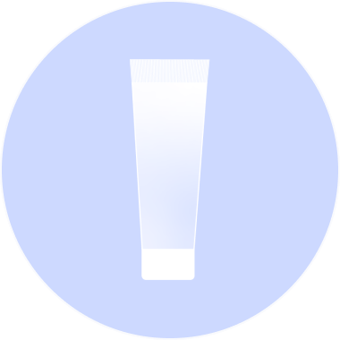
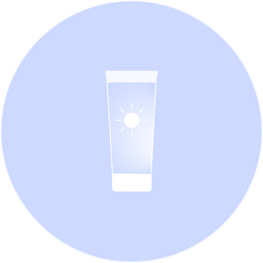

Prendersi cura della propria persona e’ importante, tanto quanto dirsi le giuste parole.
Ho deciso di fondare questo sito informativo sulla skin care coreana per poter aiutare quante più persone a destreggiarsi i questo nuovo stile di vita,
perché non si tratta solo di una beauty routine.
Io quando ho iniziato, sono andata per tentativi. Non avevo molto su cui fare affidamento, per non parlare dei prodotti, dove reperirli? Dove iniziare? Come cominciare?
Proprio io poi che il mio massimo era stato il detergente e la crema solare (solo d’estate), per non parlare del trucco quasi inesistente, ms cominciamo con ordine.
Districarsi in un nuovo ambito, che sia una nuova passione, un nuovo hobby o una uovo lavoro, è sempre un po’ traumatico, ma basta partire da piccoli passi, un po’ per volta e cercare di essere costanti.
Io ho iniziato tra Amazon e Acqua&Sapone, insomma più becera di così. Era il 2019, già l’anno prima mi ero convinta a fare le maschere in tessuto ed ero riuscita a trovare un detergente efficace, che mi piaceva usare, ma il vero dramma era la crema idratante.
Non sono mai stata fan delle creme in generale, infatti il mio primo tentativo è stato con una crema per le pelle sensibili, che era troppo nutriente per me.
L’errore più comune infatti è non sapere che tipo di pelle si ha, al di là delle problematiche che una persona potrebbe avere, conoscere la tipologia di pelle aiuta a fare una prima scelta sui prodotti base (doppia detersione, crema idratante e crema solare).
Olio Detergente
Detergente
Crema Idratante
Crema Solare
Sono approdata da Sephora, che per fortuna aveva una piccola selezione di prodotti coreani e mi sono presa un set di prova con essenza, crema contorno occhi e crema idratante.
Decisamente meglio, la consistenza della crema era più adatta alla mia pelle mista e la cosa più divertente? Mi piaceva molto dedicare quei 10/15 minuti solo a me.
La grande svolta è stato approdare da MiiN Cosmetics, un intero negozio dedicato solo alla skin care coreana e al trucco. Soprattutto perché ci sono i tester dei prodotti e aiuta molto.
Il resto è storia, ora faccio una skin care completa mattino e sera, ho ampliato le mie conoscenze tra esperienze, il lavoro e i libri.
Spero che questo sito possa aiutarvi a destreggiarvi maggiormente, specialmente se non avete la possibilità di andare in negozio e provare i prodotti o farvi consigliare.